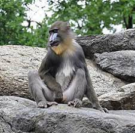
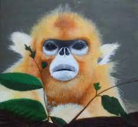

Il Mondo delle Simie
Guarda le Simie che bele che sono
n1:
InfoSimia: Macaco Giapponese (voto:9)
n2:

InfoSimia: Mandrillus Sphinx (voto:7+)
n3:
InfoSimia: Nasalis Larvatus (voto:10-)
n4:

InfoSimia: Rinopiteco Roxellana (voto:10)